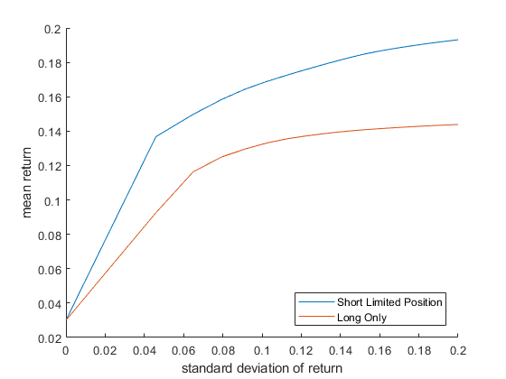
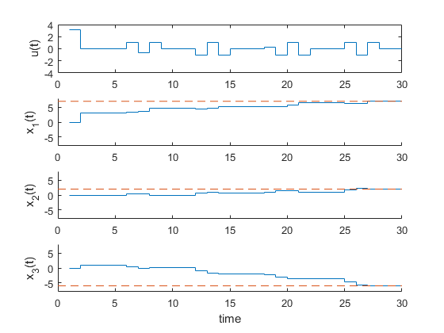

Contents
ECEN 422 - A9
David Dobbie
clc clear
Q1 a
simple_portfolio_data
rand('state', 5); randn('state', 5); n=20; pbar = ones(n,1)*.03+[rand(n-1,1); 0]*.12; S = randn(n,n); S = S'*S; S = S/max(abs(diag(S)))*.2; S(:,n) = zeros(n,1); S(n,:) = zeros(n,1)'; x_unif = ones(n,1)/n; A = randn(n); % cvx_begin sdp % variable P(n,n) symmetric % minimize(trace(P)) % A'*P + P*A <= -eye(n) % P >= eye(n) % cvx_end % -------no additional constraints cvx_begin sdp quiet variable x(n,1); minimize(x' * S * x); % minimise risk sum(x) <= 1; % all investments must sum to 1 -pbar'*x <= -pbar'*x_unif ;% bound current invest with uniform invest strat cvx_end; disp('No additional constraints') risk_uniform_invest = x_unif' * S * x_unif; risk_optimal_invest = x' * S * x; % -------long only cvx_begin sdp quiet variable x(n,1); minimize(x' * S * x); % minimise risk sum(x) <= 1; % all investments must sum to 1 -pbar'*x <= -pbar'*x_unif ;% bound current invest with uniform invest strat x >= 0 % long only cvx_end; disp(['Long only']) risk_uniform_invest = x_unif' * S * x_unif; risk_optimal_long_only_invest = x' * S * x; % ------ limit on total short position cvx_begin sdp quiet variable x(n,1); minimize(x' * S * x); % minimise risk sum(x) <= 1; % all investments must sum to 1 -pbar'*x <= -pbar'*x_unif ;% bound current invest with uniform invest strat sum(max(-x,0)) <= 0.5 % limit short to up to half of investment cvx_end; sum(max(-x,0)); disp(['Limit Short to half of investment']) risk_uniform_invest = x_unif' * S * x_unif; risk_optimal_limit_short_invest = x' * S * x; risk_variance= [risk_uniform_invest; risk_optimal_invest; ... risk_optimal_long_only_invest; risk_optimal_limit_short_invest]; rows = {'Uniform Investment', 'Unconstrained Investment',... 'Long-only investment', 'Short-limited investment'}; table(risk_variance, 'RowNames', rows)
No additional constraints
Long only
Limit Short to half of investment
ans =
4×1 table
risk_variance
_____________
Uniform Investment 0.0075753
Unconstrained Investment 0.00034623
Long-only investment 0.0025663
Short-limited investment 0.00044078
We see that the no constraints of investment type achieves the lowest risk. Long-only has the highest risk, and short limit has a compromise between the two. All of these results are still better than a uniform investment however even though the return is the constant.
Q1 b
rand('state', 5); randn('state', 5); n=20; pbar = ones(n,1)*.03+[rand(n-1,1); 0]*.12; S = randn(n,n); S = S'*S; S = S/max(abs(diag(S)))*.2; S(:,n) = zeros(n,1); S(n,:) = zeros(n,1)'; x_unif = ones(n,1)/n; length_res = 20; var_limit_half_short = linspace(0,0.20^2,length_res); mean_return_half_short = zeros(1,length_res); var_limit_long_only = linspace(0,0.20^2,length_res); mean_return_long_only = zeros(1,length_res); % calculate wrt to a set variance for indx = 1:length_res cvx_begin sdp quiet variable x(n,1); minimize(-pbar'*x); % minimise risk sum(x) <= 1; % all investments must sum to 1 x' * S * x <= var_limit_half_short(indx) sum(max(-x,0)) <= 0.5 % limit short to up to half of investment cvx_end; mean_return_half_short(indx) = pbar'*x; cvx_begin sdp quiet variable x(n,1); minimize(-pbar'*x); % minimise risk sum(x) <= 1; % all investments must sum to 1 x' * S * x <= var_limit_long_only(indx) x >= 0 % long only cvx_end; mean_return_long_only(indx) = pbar'*x; end std_dev_limit_half_short = sqrt(var_limit_half_short); std_dev_limit_long_only = sqrt(var_limit_long_only); figure(1) clf xlabel('standard deviation of return') ylabel('mean return') hold on plot(std_dev_limit_half_short, mean_return_half_short) plot(std_dev_limit_long_only, mean_return_long_only) hold off legend('Short Limited Position','Long Only','Location',"SouthEast")
Q2
clear A = [-1 0.4 0.8; 1 0 0; 0 1 0]; b = [1;0;0.3]; x_des = [7; 2; -6]; N = 30; x_init = [0;0;0]; H = []; for indx = 1:N H = [H A^(indx - 1)*b]; end cvx_begin sdp quiet variable u(N,1) variable t(N,1) variable y(N,1) minimise(sum(t)) %get with 1e-6 of target H*u <= x_des + 1e-6 H*u >= x_des - 1e-6 % input is element wise in absolute value by y -y <= u u <= y % relating cost of step to fuel function that we are minimising t >= y t >= 2*y -1 cvx_end; H*u x_out = zeros(3,N); x_out(:,1) = x_init; for indx = 2:N x_out(:,indx) = H(:,1:indx)*u(1:indx); end figure(2) clf subplot(4,1,1) stairs(u) ylabel('u(t)') ylim([-4 4]) subplot(4,1,2) hold on stairs(x_out(1,:)') plot([0 N],[x_des(1) x_des(1)], '--') ylabel('x_1(t)') ylim([-8 8]) hold off subplot(4,1,3) hold on stairs(x_out(2,:)') plot([0 N],[x_des(2) x_des(2)], '--') ylabel('x_2(t)') ylim([-8 8]) hold off subplot(4,1,4) hold on stairs(x_out(3,:)') plot([0 N],[x_des(3) x_des(3)], '--') ylabel('x_3(t)') ylim([-8 8]) hold off xlabel('time')
ans =
7.0000
2.0000
-6.0000
 Q3) a)
u1 = -2; u2 = -3; cvx_begin quiet variable x1 variable x2 dual variable y1 dual variable y2 dual variable y3 % equivalnet to min x1*x1 + 2*x2*x2 - x1*x2 - x1 minimise( 0.5*quad_form(x1,1) + 1.5*quad_form(x2,1) + 0.5*quad_form(x1-x2,1) + -x1 ) y1 : x1 + 2*x2 <= u1 y2 : x1 - 4*x2 <= u2 y3 : 5*x1 + 76*x2 <= 1 cvx_end; % optimal variables y1; y2; y3; x1; x2; % check KKT - if true they hold % primal primal1 = x1 + 2*x2 <= u1; primal2 = x1 - 4*x2 <= u2; primal3 = 5*x1 + 76*x2 <= 1; % dual dual1 = y1 >= 0; dual2 = y2 >= 0; dual3 = y3 >= 0; % complementary slackness slack1 = abs(y1*(x1 + 2*x2 - u1) <= 1e-3); slack2 = abs(y2*(x1 - 4*x2 - u2) <= 1e-3); slack3 = abs(y3*(5*x1 + 76*x2 - 1) <= 1e-3); % Lagrangian gradient is 0 lagan_x1 = abs(2*x1 - x2 - 1 + y1 + y2 + 5*y3) <= 1e-3; lagan_x2 = abs(4*x2 - x1 + 2*y1 - 4*y2 + 76*y3) <= 1e-3; % KKT conditions hold if all of these inequalities are true KKT_cond_satisfied = (primal1 & primal2 & primal3 & dual1 & dual2 & dual3 ... & slack1 & slack2 & slack3 & lagan_x1 & lagan_x2)
KKT_cond_satisfied = logical 1
Q3) b)
del = [0, 0;
0, -0.1;
0, 0.1;
-0.1, 0;
-0.1, -0.1;
-0.1, 0.1;
0.1, 0;
0.1, -0.1;
0.1, 0.1];
res = zeros(9,1);
for indx = 1:9
u1 = -2 + del(indx,1);
u2 = -3 + del(indx,2);
cvx_begin quiet
variable x1
variable x2
dual variable y1
dual variable y2
dual variable y3
% equivalnet to min x1*x1 + 2*x2*x2 - x1*x2 - x1
minimise( 0.5*quad_form(x1,1) + 1.5*quad_form(x2,1) + 0.5*quad_form(x1-x2,1) + -x1 )
y1 : x1 + 2*x2 <= u1
y2 : x1 - 4*x2 <= u2
y3 : 5*x1 + 76*x2 <= 1
cvx_end;
p_exact = 0.5*quad_form(x1,1) + 1.5*quad_form(x2,1) + 0.5*quad_form(x1-x2,1) + -x1;
res(indx) = p_exact;
end
var_name = {'del_1', 'del_2', 'p_opt_exact', 'clean_less_than_perturbed'};
table(del(:,1), del(:,2), res, res<=res(1),'VariableNames',var_name)
ans =
9×4 table
del_1 del_2 p_opt_exact clean_less_than_perturbed
_____ _____ ___________ _________________________
0 0 8.2222 true
0 -0.1 8.7064 false
0 0.1 7.98 true
-0.1 0 8.565 false
-0.1 -0.1 8.8156 false
-0.1 0.1 8.3189 false
0.1 0 8.2222 false
0.1 -0.1 8.7064 false
0.1 0.1 7.7515 true